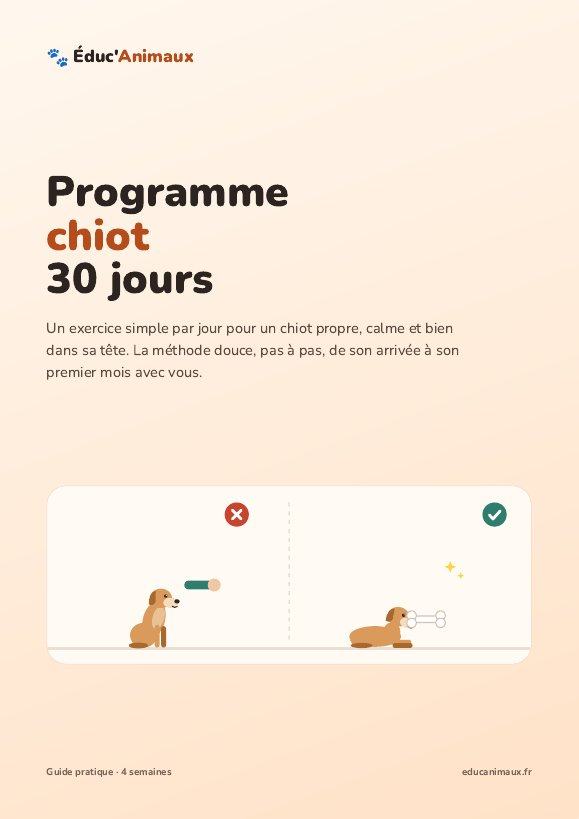
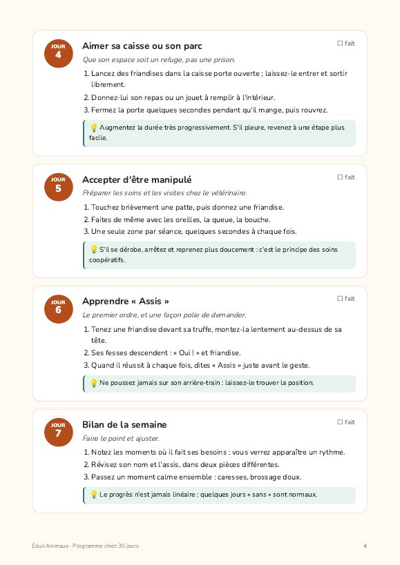

Programme chiot : 30 jours pour un chiot propre et calme
Vous venez d'accueillir un chiot, ou il arrive bientôt ? Ce guide vous dit exactement quoi faire chaque jour pendant son premier mois avec vous : 5 à 10 minutes par jour, avec la méthode douce.
- ✅ 30 exercices courts, un par jour, expliqués en 3 étapes
- ✅ Propreté, nom, assis, couché, rappel, rester seul, laisse souple…
- ✅ La sociabilisation pas à pas : bruits, surfaces, personnes, voiture
- ✅ Les solutions aux problèmes fréquents : il mordille, pleure la nuit, saute sur les gens
- ✅ Une grille de suivi à cocher pour voir ses progrès
- ✅ Guide PDF illustré de 14 pages, à lire sur téléphone ou à imprimer
12 € · paiement unique · téléchargement immédiat
Je télécharge le programme🚧 Bientôt disponible. Inscrivez-vous ci-dessous pour recevoir le guide gratuit des 10 ordres de base et être prévenu(e) de la sortie.
Ce que contient le programme
Semaine 1 · Confiance et routine
Une arrivée en douceur, son nom, la routine propreté, aimer sa caisse, accepter les manipulations, « assis ».
Semaine 2 · Les bases
« Couché », le rappel à la maison, rester seul quelques minutes, le harnais, « donne », « touche ».
Semaine 3 · Découvrir le monde
Les bruits, les surfaces, les rencontres, la laisse souple, la voiture, « laisse ».
Semaine 4 · Consolider
« Pas bouger », le rappel avec la longe, « à ta place », la première balade de découverte, les soins sans lutte.
Un aperçu

Questions fréquentes
Mon chiot a déjà 4 mois, est-ce trop tard ?
Non : le programme convient aux chiots de 2 à 6 mois environ, et même à un jeune chien adopté. Avancez simplement à son rythme.
Faut-il du matériel particulier ?
Non : des friandises, un harnais, une laisse et quelques jouets suffisent. La liste complète est dans notre kit d'accueil du chiot.
Comment je reçois le guide ?
Juste après le paiement, vous recevez un lien de téléchargement du PDF par e-mail.
Les conseils de ce guide ne remplacent pas l'avis d'un vétérinaire ou d'un éducateur canin.